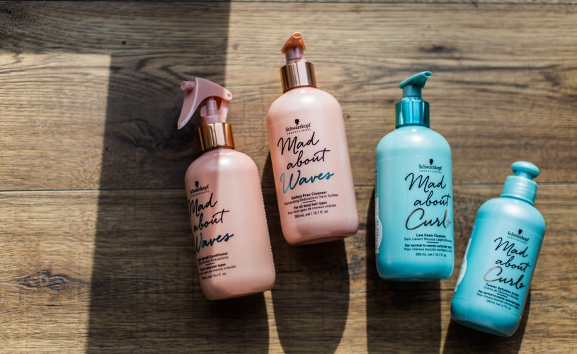

El pre-champú tiene la función de limpieza del cabello y lo deja completamente preparado para que el champú actúe en la fibra mediante el depósito de nutrientes esenciales para su salud. Refuerza la acción del champú convencional. Por esta razón, no funciona solo y siempre se debe utilizar antes que el champú habitual. Hay algunos que tienen micro partículas que actúan como exfoliantes del cuero cabelludo.
El uso de un champú adecuado asegura un cabello suave, flexible y brillante. La función básica de un champú es quitar la suciedad del eje del pelo y el cuero cabelludo. El pH del cuero cabelludo es de entre 3,8 y 5,6, y el pH óptimo para un champú para el uso diario es de entre 5 y 7. Si el pH es mayor que 7, la cutícula se abrirá más de lo habitual. Este es el caso de los champú antirresíduos, que eliminan sebo en mayor profundidad, restos de keratina, polvo y cosméticos depositados en el cabello. En el caso del cabello dañado o tratado químicamente, el pH del champú debe ser ácido (pH inferior a 7).
